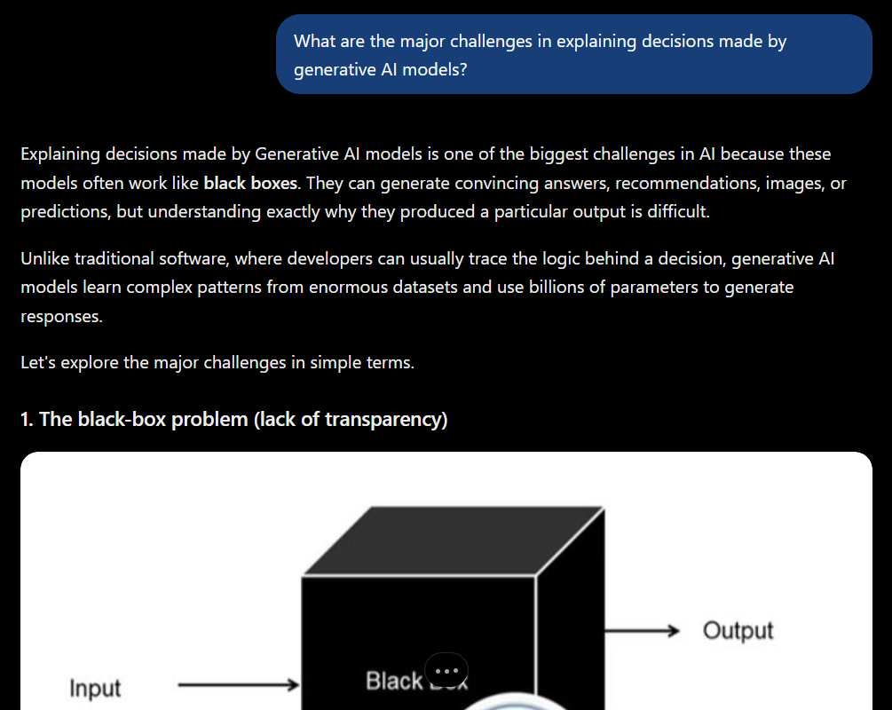
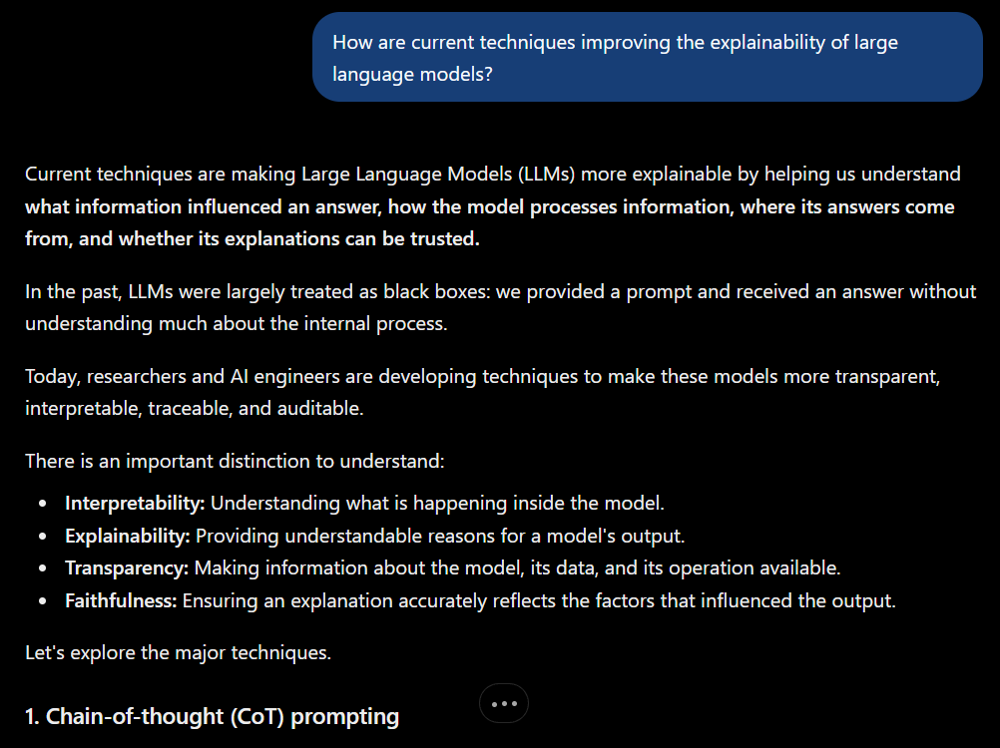
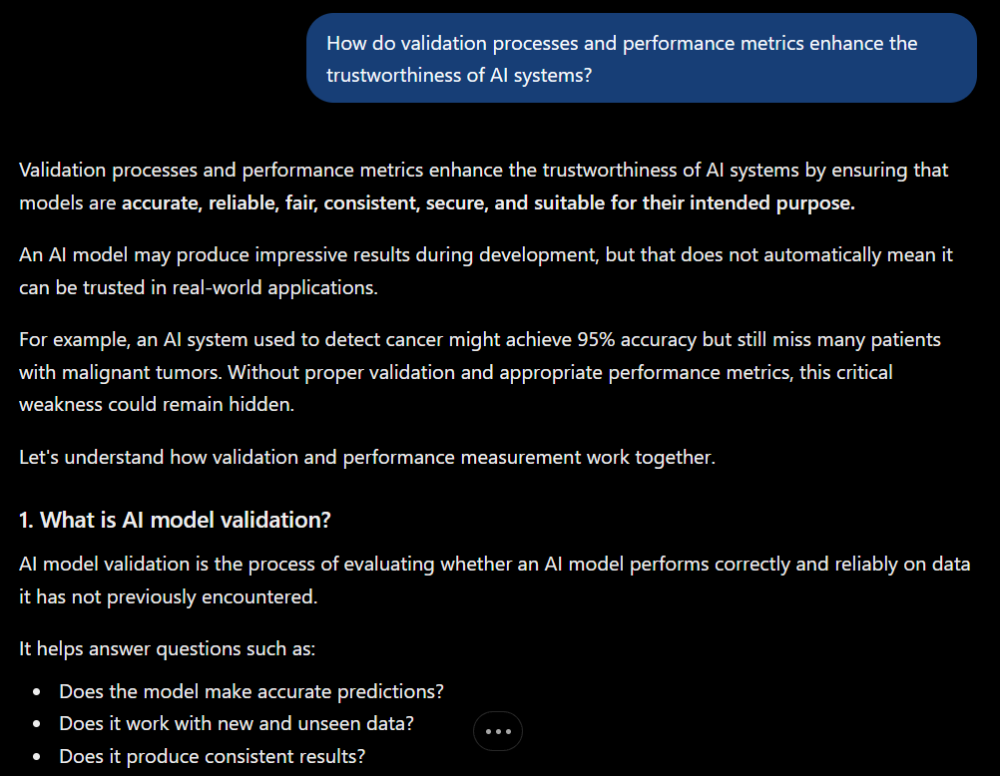

Why the decisions of GPT, Claude, Gemini, and Llama are hard to explain, how validation and performance metrics show whether a model can be relied on, and what OpenAI, Anthropic, Google, and Meta are doing to make their models more transparent
Opening the Black Box: Explainability, Validation, and Trust in LLMs
Large language models now draft medical notes, summarize contracts, and screen loan files, yet nobody, including their developers, can fully say why a model gave a particular answer. This infographic explains that gap and what is being done to close it.
A one-page infographic with a black-box diagram, eight challenge cards, three evidence charts, an explainability depth ladder, a technique comparison table, a challenge-by-approach coverage map, profiles of four AI labs, a validation pipeline, and a metrics table.
Define explainable AI and its importance, show the main obstacles to explaining LLMs, demonstrate how validation and performance metrics build trust, and map the techniques industry leaders use today.
Read interpretability research from OpenAI, Anthropic, Google DeepMind, and Meta, faithfulness and evaluation studies, and the NIST and EU frameworks; grouped every finding as a challenge, a technique, or a validation practice; then designed the visuals around those three groups.
Research papers, lab publications, and government frameworks for content; HTML, CSS, and inline SVG for the diagrams and charts; ChatGPT for the three suggested prompts; GitHub Pages for publishing.
A non-technical reader leaves knowing what kind of "explanation" an AI tool can and cannot give, and which test results to ask for before trusting it with a decision.
Explanations are sorted by depth, from asking the model to inspecting its internal features, and each technique is shown with its known limits, so the page does not oversell what current tools can explain.
Useful for teams adopting LLMs in regulated work, for QA and data engineers who must sign off on model output, and for managers who need to judge a vendor's claims about safety and accuracy.
31 sources: interpretability research from the four labs, peer-reviewed studies on faithfulness and evaluation, NIST and EU frameworks, and a US court ruling and regulator circular. Full list below.
Four numbers that show why explaining an LLM is hard, and why measuring it matters.
Parameters in GPT-3, and every one of them takes part in each answer. No single weight explains an output (Brown et al., 2020).
Interpretable concepts Anthropic extracted from Claude 3 Sonnet, from cities to code bugs, using sparse autoencoders (Templeton et al., 2024).
How often Claude 3.7 Sonnet admitted using a hint that changed its answer. The reasoning it wrote out usually left it out (Chen et al., 2025).
Truthful answers from the best model tested on TruthfulQA, against human participants (Lin et al., 2022).
Explainable AI (XAI) is the set of methods that make an AI system's outputs and decisions understandable to the people who use, oversee, or are affected by them. For an LLM, that means being able to answer three questions: what did the model rely on, how did it get from the question to the answer, and how far can that answer be trusted?
The user sees a fluent answer but cannot tell whether it rests on sound evidence, a bias in the training data, or a guess.
The answer comes with the evidence it used, the internal concepts that drove it, and a measured error rate, so a person can check it.
The US National Institute of Standards and Technology sets four principles for explainable AI (Phillips et al., 2021):
A clinician must be able to check why a model suggested a diagnosis before acting on it. An unexplained answer cannot be verified against the patient's record.
US lenders must give specific reasons when they deny credit. The Consumer Financial Protection Bureau has stated that using a complex algorithm does not excuse a lender from that duty (CFPB, 2022).
In Mata v. Avianca (2023), lawyers were sanctioned for filing a brief that cited court cases ChatGPT had invented. The output looked authoritative and gave no sign it was fabricated.
The EU AI Act classes AI used in employment, education, credit scoring, and essential public services as high-risk, and requires such systems to be transparent enough for users to interpret their output (European Parliament & Council, 2024).
Eight obstacles stand between an LLM's answer and a trustworthy explanation of it. The first four come from how the models are built; the last four come from data, behavior, business practice, and the law.
An answer emerges from non-linear interactions among billions of weights across dozens of layers. No single component explains it.
Models store more concepts than they have neurons, so one neuron responds to several unrelated ideas. Reading neurons one at a time gives confusing results.
When asked to explain itself, a model writes a plausible account after the fact. That account may not match the computation that produced the answer.
Heatmaps of where a model "looks" are easy to draw but can mislead. Very different attention patterns can produce the same prediction.
Web-scale training data carries stereotypes, errors, and over-represented viewpoints, and the model learns them. Too much data to audit by hand.
LLMs state false facts in the same fluent tone as true ones, and tuning a model to be helpful can make its confidence less reliable.
The most widely used models do not publish their weights, architecture, or training data, so outside researchers cannot inspect them.
Laws now demand explanations that today's tools cannot always provide, and different audiences need different levels of detail.
Share of cases where a reasoning model mentioned a hint it had used
Source: Chen et al. (2025). Higher is more faithful.
817 questions designed to draw out common misconceptions
Source: Lin et al. (2022).
Share of core scenarios a typical model had been tested on
Source: Liang et al. (2022).
Explainability techniques differ in how far inside the model they look. The deeper the method, the closer it gets to the model's real computation, and the more expertise and computing power it needs.
Prompt the model to reason step by step, cite its sources, or explain its answer. Anyone can do this today in ChatGPT, Claude, or Gemini, and chain-of-thought prompting also improves accuracy on reasoning tasks (Wei et al., 2022). The catch: the explanation is more text from the same model and may not be faithful.
Change or remove parts of the input and score how much each word moved the answer, or follow attention between tokens. These methods work on any model but describe correlations, not the mechanism.
Mechanistic interpretability decomposes activations into human-readable features and traces how they connect. It needs access to the weights, so only the developer or an open-weight model allows it.
| Technique | Depth | What it reveals | Main limitation |
|---|---|---|---|
| Chain-of-thought prompting | Outside | The steps the model writes on the way to an answer (Wei et al., 2022) | The written steps can omit what really drove the answer (Turpin et al., 2023) |
| Model and system cards | Outside | Intended use, evaluation results, and known limits (Mitchell et al., 2019) | Depth of disclosure is up to the developer |
| LIME and SHAP | Boundary | How much each input feature pushed a prediction up or down (Ribeiro et al., 2016; Lundberg & Lee, 2017) | Approximations that can change between runs; costly for long prompts |
| Integrated gradients | Boundary | Token-level attribution with formal guarantees (Sundararajan et al., 2017) | Needs gradients, so not available through a closed API |
| Attention visualization | Boundary | Which tokens each layer attends to | Attention weights are not a reliable explanation (Jain & Wallace, 2019) |
| Probing classifiers | Inside | Whether a layer encodes a property such as sentiment or grammar | Encoded does not mean used by the model (Belinkov, 2022) |
| Sparse autoencoders | Inside | Millions of interpretable features that can be switched up or down (Templeton et al., 2024) | Expensive to train and cover only part of what the model knows |
| Circuit tracing | Inside | Step-by-step paths from input to output (Lindsey et al., 2025) | Labor-intensive; gives clear results for only some prompts |
Each row is a challenge from above; each column is a family of approaches. The map shows that no single method covers every challenge, and that validation and documentation cover gaps that explanation methods cannot reach.
| Challenge | Chain-of-thought (depth 1) |
Input attribution (depth 2) |
Features and circuits (depth 3) |
Faithfulness tests | Benchmarks and metrics | Cards and open weights |
|---|---|---|---|---|---|---|
| Built into the model | ||||||
| Scale and opacity | Partial | Partial | Direct | — | — | Partial |
| Superposition | — | — | Direct | — | — | — |
| Unfaithful explanations | — | Partial | Direct | Direct | Partial | — |
| Attention is not explanation | — | Direct | Direct | — | — | — |
| From data, behavior, business, and law | ||||||
| Data quality and bias | — | Partial | Partial | — | Direct | Partial |
| Confident hallucinations | Partial | — | Partial | — | Direct | — |
| Closed models | Partial | Partial | — | — | Partial | Direct |
| Regulatory pressure | Partial | Partial | — | — | Direct | Direct |
Only feature and circuit methods directly address superposition. Asking the model (depth 1) cannot fix a problem that sits in how its neurons store concepts.
Bias and hallucinations are caught mainly by benchmarks and metrics such as fairness scores, TruthfulQA, and calibration, not by explaining single answers.
Chain-of-thought cannot detect its own unfaithfulness. That takes a faithfulness test or an internal method that compares the stated reasoning with what the model computed.
For closed models, the strongest methods (depth 3 and gradient-based attribution) are available only to the developer. Outside users must rely on published cards, benchmarks, and behavior.
The four labs behind GPT, Claude, Gemini, and Llama take different routes. Closed-model labs study their own internals and publish findings; Meta's open weights let outside researchers do the inspecting.
Explainability tells you why a model answered as it did. Validation and metrics tell you how often it is right, and where it fails. Trust needs both.
Shows the evidence and internal concepts behind an output.
Tests the model on data and situations it was not trained on.
Puts numbers on accuracy, calibration, fairness, and safety.
Evidence-based confidence for a specific use, not blind faith.
Split data into training, validation, and test sets so the model is scored on examples it never saw.
Score the model on shared tests such as MMLU's 57 subjects (Hendrycks et al., 2021) or HELM's multi-metric suite (Liang et al., 2022).
Confirm benchmark questions were not in the training data, as GPT-3's authors did for web-crawled text (Brown et al., 2020).
Experts try to make the model fail on purpose; human raters judge helpfulness and harm.
Check that stated confidence matches real accuracy and that small changes to the prompt do not flip the answer.
Track errors, drift, and user reports after launch, as the NIST AI Risk Management Framework recommends (NIST, 2023).
| Metric | What it measures | How it builds trust |
|---|---|---|
| Accuracy, F1 | Share of correct answers; F1 balances precision and recall when errors cost differently | Sets a baseline. GPT-4 scored 86.4% on MMLU (OpenAI, 2023) |
| Calibration | Whether a model that says it is 80% sure is right about 80% of the time | Tells users when to double-check an answer |
| Truthfulness and hallucination rate | How often the model states falsehoods or invents sources | Measures the failure behind Mata v. Avianca |
| Robustness | Performance under typos, rephrasing, or adversarial prompts | Shows whether results survive real-world input |
| Fairness and bias | Differences in quality or tone across demographic groups | Required for high-risk uses such as hiring and credit |
| Toxicity and safety | Rate of harmful content and of correct refusals | Protects users and the organization deploying the model |
| Explanation faithfulness | How well an explanation matches what actually drove the answer | Checks the explanation itself, as in Chen et al. (2025) |
| Efficiency | Latency, cost, and energy per request | Confirms the model is practical at the scale it will run |
HELM reports seven of these together (accuracy, calibration, robustness, fairness, bias, toxicity, and efficiency) because a model can lead on one and trail on another (Liang et al., 2022).
Asking an LLM "why" is useful and free, but the answer is more generated text. Treat it as a lead to check, not as evidence of how the model decided.
Sparse autoencoders and circuit tracing have moved from toy models to production models such as Claude 3 Sonnet and GPT-4 in about two years, though they explain only part of the model's behavior so far.
A single accuracy score hides poor calibration, bias, and hallucinations. Ask for a set of metrics that matches the risks of the specific use.
Models drift, users find new failure modes, and laws change. Trust is earned through monitoring after launch, not granted once at release.
Every finding from the research was sorted along three axes. Each axis answers a different question a reader brings when deciding whether to trust an LLM.
Each source finding was first labeled as a challenge (something that makes explanation hard), a technique (something that produces an explanation), or a validation practice (something that measures reliability). These three roles became the main sections of the page, and the trust equation shows how they combine.
Techniques were sorted by what access they need: the model's text output only (depth 1), its inputs and gradients (depth 2), or its internal activations (depth 3). Depth was chosen over grouping by company or by date because it predicts both how faithful a method can be and who is able to use it, which matters most to a non-technical reader.
The eight challenges were split into four built into the model (scale, superposition, unfaithful explanations, misleading attention) and four from outside it (data, hallucination behavior, closed business models, regulation). Built-in challenges need interpretability research; outside challenges respond to validation, disclosure, and policy, as the coverage map shows.
Chain-of-thought appears twice: as a depth-1 technique and, through its unfaithfulness, as a challenge. I kept both because hiding either side would mislead. Model cards are placed at depth 1 because they describe the model from outside. Hallucination is listed as a behavior challenge rather than a data one, since it persists even with clean data.
A cell is Direct only when a cited source designed or tested the approach against that challenge, Partial when it helps indirectly or with a stated limit, and blank otherwise. Ratings follow the limitations the sources report, not my own judgment of potential.
Explainability methods built for images, such as saliency maps for vision models, and classic interpretable models such as decision trees, were excluded because the assignment centers on LLMs.
Explainable AI lets people check an AI system's decisions instead of simply accepting them. LLMs such as GPT, Claude, Gemini, and Llama resist explanation because their answers come from billions of interacting weights, their neurons mix many concepts, and their self-explanations are often unfaithful: Claude 3.7 Sonnet disclosed a hint that changed its answer only 25% of the time. Industry is responding at three depths, from prompting models to reason aloud to reading their internal features, as in Anthropic's 34 million features from Claude 3 Sonnet and Google's open Gemma Scope. Explanation alone does not create trust, however. Validation shows whether a model holds up on data it has not seen, and metrics such as accuracy, calibration, truthfulness, and fairness show how far it can be relied on. Explanation answers "why," validation answers "does it hold up," and metrics answer "how well"; an organization needs all three before a model influences a medical, financial, or legal decision.
The design is built for a non-technical reader. A black-box versus glass-box diagram opens the page so the core idea is clear before any terms appear, and each challenge card carries one sourced piece of evidence. Techniques form a three-step ladder because "how deep can we look?" separates useful tools from misleading ones, and a coverage map then shows which approach addresses which challenge, revealing that validation fills gaps explanation cannot. Blue, orange, and green stay fixed for explainability, validation, and metrics, and every chart prints its numbers so color is never the only cue. This matters now because LLMs are entering regulated fields faster than explanation methods are maturing.
The black-box and glass-box diagram explains the whole topic in one look, so terms such as "feature attribution" have a place to land when they appear later.
Sorting techniques by how far inside the model they look lets a reader compare a ChatGPT prompt and an Anthropic research paper on the same scale.
Each challenge card ends with a sourced finding, and every chart names its study. Limitations sit next to techniques, not in a footnote.
Blue, orange, and green mark the three trust pillars throughout; a teal accent marks explainability depth. Values are printed as text and the layout collapses to one column on phones.
Definition, black-box diagram, NIST's four principles, and four sector cards on why transparency matters.
Eight obstacles including model complexity, opaque decisions, unfaithful explanations, data bias, and regulation, with three evidence charts.
A trust equation, a six-step validation pipeline, and a table of eight metrics with how each builds trust.
A three-depth technique ladder, a technique comparison table, and the work of OpenAI, Anthropic, Google, and Meta.
A two-paragraph summary of the key points and the design rationale, plus a section explaining how the content was classified, above.
All three of the assignment's suggested prompts, with screenshots of the ChatGPT responses, below.
The assignment suggests using a generative AI platform for additional insight. I used ChatGPT (OpenAI) with all three suggested prompts on November 15, 2026, and checked its answers against the cited sources before using any point here. Each screenshot shows the start of the response. Click a screenshot to enlarge it.

Suggested prompt 1: What are the major challenges in explaining decisions made by generative AI models?

Suggested prompt 2: How are current techniques improving the explainability of large language models?

Suggested prompt 3: How do validation processes and performance metrics enhance the trustworthiness of AI systems?
The finding that changed my thinking most was that a model's explanation of itself is a separate output, not a window into its reasoning. Before this research I treated a step-by-step answer as evidence that the model had reasoned well. The faithfulness studies showed that the written steps can leave out the very thing that changed the answer, so I now read model explanations the way I read a log message: useful, but only after I know how it was produced.
The research connected closely to this workshop's work on validation. Holding out a test set, watching for overfitting, and choosing precision, recall, or F1 to match the cost of each error all scale up directly to LLMs. GPT-3's contamination checks are the same train-versus-test discipline applied to text scraped from the web. What changes at LLM scale is that one accuracy number is never enough: HELM's case for measuring calibration, robustness, fairness, and toxicity together matches the multi-metric evaluation we practiced on smaller models.
The main challenge was separating real progress from hype. Interpretability announcements are written to impress, and it is easy to repeat them in a way that makes sparse autoencoders sound like a solved problem. My strategy was to pair every technique with the limitation its own authors report, to rate the coverage map only from what sources tested, and to check key figures and author lists against the original papers rather than summaries. Using ChatGPT for the three suggested prompts helped me see the topic from a non-specialist angle, and I used its answers as a checklist of points to verify against the papers, not as evidence.
In QA automation, a test is only as good as its oracle, the rule that says what the right output is. LLMs make that oracle hard to write, which is why validation pipelines, red teams, and production monitoring matter as much as the model itself. The practical lesson for my work is to ask a vendor for evaluation results across several metrics and for the limits of their explanations, and to build monitoring into any LLM feature from the first release.